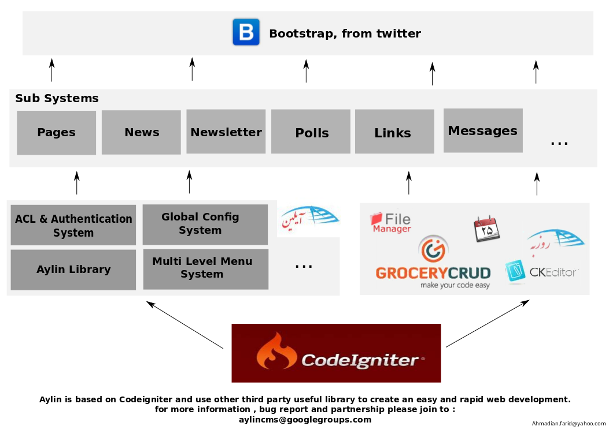

توضیح:
سیستم مدیریت محتوای آیلین بر پایه فریم ورک Codeigniter بنا شده است و سعی دارد تجربه توسعه سریع و آسان با کمترین میزان پیچیدگی و سختی در کدها را برای برنامه نویسان وب فراهم کند. در این راه از قالب Codeigniter استفاده میکند که علاوه بر سرعت و سهولت در یادگیری و مستندات کامل از استاندارد های لازم روز هم برخوردار است.
در ادامه سعی دارد کمبود های قالب مذکور را با اضافه کردن کتابخانه های مفید ثانویه و روال های مرسوم رفع کرده تا برنامه نویس در شروع کار پروژه خود از حداقل های لازم و مرسوم در کمترین زمان ممکن برخوردار شود.
لازم به تاکید است که هدف آن به هیچ عنوان رقابت با CMS های مرسوم نبوده، بلکه استاندارد سازی و سرعت در روند توسعه وب سایت های تحت توسعه گروهای کوچک از اهداف آن میباشد.
مرامنامه و مجوز:
آیلین از فلسفه نرم افزارهای آزاد / متن باز تبعیت میکند و به طور خاص تحت مجوز GPLv2 میباشد.
اما این به معنای رایگان بودن آن نیست، همانطور که میدانید پشتیبانی و توسعه هر نرم افزاری احتیاج به منابع مالی دارد فلذا ما انتظار داریم در صورت استفاده از AylinCMS در پروژه های تجاری مقداری از سود آن بنا به صلاح دید شما به قسمت کمک های مردمی آیلین داده شود.
همچنین بخش خدمات و محصولات جانبی کاملا بر مبنای مدل تجاری بنا شده است تا بار اصلی امرار معاش برنامه نویسان اصلی پروژه را بر دوش کشد.
بدیهست به دلیل نبود و یا عدم اجرای صحیح قوانین نرم افزاری در کشور اعتماد ما به مرام و وجدان کاری استفاده کنندگان است.
نصب:
برای نصب AylinCMS پس از دانلود آن از آدرس https://github.com/pesarkhobeee/Aylin/archive/master.zip آن را در پوشه وب سرور خود اکستراک کرده و در صورت نیاز مالک پوشه آن را کاربر وب سرور قرار دهید، برای مثال در توزیع slackware سیستم عامل Linux از دستور زیر:
chown -R apache:apache aylin/
و یا در توزیع ubuntu از دستور زیر استفاده کنید:
chown -R www-data:www-data aylin/
سپس کافیست دیتابیس موردنظر خود را ساخته و برای ادامه روند نصب و انتخاب گزینه ها به نصاب تحت وب AylinCMS از طریق مرورگر ایترتنی خود مراجعه کنید.
توسعه:
برای تصحیح و تکمیل پروژه میتوانید از آدرس https://github.com/pesarkhobeee/Aylin استفاده کنید، همچنین برای بحث و طرح سوال پیرامون موضوعات مربوطه میتوانید به لیست پستی aylincms@googlegroups.com مراجعه کنید.
در آینده مستندات مربوط به توسعه بخش ها و زیر سیستم ها در AylinCMS اضافه خواهند شد اما فعلا به یک شمای کلی از آن بسنده میکنیم:
همچنین شما میتوانید از مستندات تهیه شده برای CodeIgniter با فرمت
PDF
و
ODF
استفاده کنید
